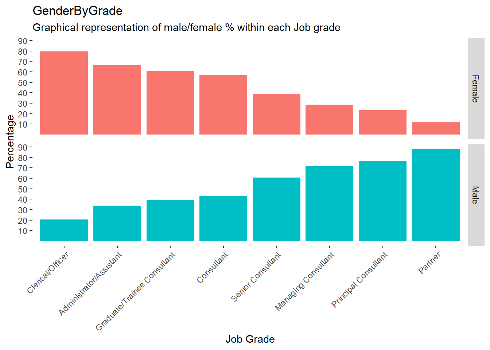

Code
library(tidyverse)
library(here)
library(ggplot2)Cozmina Secula
September 14, 2023
A people analytics project typically involves working with quantifiable data to address business questions and objectives. However, for data to be valuable, it requires analysis and interpretation, which is where analytic techniques become critical. This post introduces two distinct tools for initiating data analysis with categorical data: frequency tables and the chi-squared test.
Frequency tables serve as a statistical instrument for categorical data analysis. They achieve this by counting the occurrences of variables within a data set, providing a concise overview of the distribution and patterns within these categorical variables. When analyzing categorical data, it is often essential to determine if a significant relationship exists between two categorical variables within data set. The chi-squared test helps determine whether these two variables are associated or functionally related. In simpler terms, it quantifies the degree of independence between two categorical variables. When employed together, these tools can unveil intriguing patterns and relationships within data.
In this post, I will guide you through the utilization of frequency tables and the chi-squared test for insightful data analysis.
The simplest way to summarize data for individual variables is to present them in a table, which displays specific amounts. In the case of categorical data, the table provides a summary of the number of cases (frequencies) in each category. This is known as a frequency table and is used when you want to summarize data for a single variable.
However, when you want to examine the relationship between two variables simultaneously, you can use a different type of table called a contingency table or cross-tab. This table does a cross-tabulation of the frequency of occurrence for each category of interest. For example, when working with survey data, frequency tables can be very useful for gaining insights into the distribution and patterns of categorical variables.
A chi-squared test, also known as a chi-square or χ2 test, is a statistical hypothesis test commonly employed in the analysis of contingency tables, especially when dealing with large sample sizes. In simpler terms, this test is primarily used to determine whether two categorical variables (representing two dimensions of the contingency table) are independent in influencing the values observed within the table.
This test is frequently utilized in research to assess the independence of two variables. It operates by comparing the observed values in the table with what would be expected if the two distributions were entirely independent.
In essence, the chi-squared test evaluates the likelihood of the data in a table occurring solely by chance by contrasting it with the expected outcomes if the two variables were truly independent of each other.
The procedure for assessing the presence of a significant difference between variables involves the following steps:
In this section, we will consider a case study focused on diversity and inclusion (D&I). The case study is sourced from the book Predictive HR Analytics : Mastering the HR Metric. Our exploration will cover the creation of frequency tables, data preparation, and analysis in R software using both base R functions and the tidyverse packages. Additionally, we will be going over the Chi Square test and its implementation using R.
The company aims to investigate the possible underrepresentation of women in senior leadership roles within the organization. This inquiry is motivated by both commercial and people-centric considerations. From a commercial standpoint, the organization seeks to foster a greater diversity of thought in senior and strategic discussions. On the other hand, from a people perspective, the organization wants to assess whether it maintains gender balance by providing positive role models for younger employees.
Are women underrepresented in senior leadership roles within the organization?
The data are available here
Load the data set and take a look at it.
# A tibble: 1,493 × 11
BossGender Gender JobGrade Age Tenure Status PerformanceScore
<dbl> <dbl> <dbl> <dbl> <dbl> <dbl> <dbl>
1 1 1 6 39 0 1 4
2 1 1 5 37 6 1 4
3 1 1 5 35 1 1 4
4 1 1 3 30 3 1 4
5 1 1 6 33 0 1 NA
6 1 1 7 40 0 1 4
7 1 1 6 49 8 1 4
8 1 1 5 37 1 1 5
9 1 1 6 33 11 1 4
10 1 1 6 38 2 1 4
# ℹ 1,483 more rows
# ℹ 4 more variables: BossPerformance <dbl>, Division <dbl>, Country <dbl>,
# leaver <dbl>We have information about 1483 employees, each with 11 variables recorded. Our primary goal is to determine whether there is an underrepresentation of women in senior leadership positions within the organization. The specific variables we are focusing on are Gender and JobGrade. To accomplish our objective, we will begin by selecting the data related these key variables.
# A tibble: 1,493 × 2
Gender JobGrade
<dbl> <dbl>
1 1 6
2 1 5
3 1 5
4 1 3
5 1 6
6 1 7
7 1 6
8 1 5
9 1 6
10 1 6
# ℹ 1,483 more rowsBased on the case study description, we have data from a management consulting firm comprising 1,493 employees, with 746 being female and 745 being male. At first glance, it appears to indicate an organization with an equal gender balance, with 50 percent male and 50 percent female representation. The organization comprises eight distinct job grades, which are listed alongside their corresponding numbers in Table 1.
| Grade | Job Grade |
|---|---|
| 1 | Clerical/Officer |
| 2 | Administrator/Assistant |
| 3 | Graduate/Trainee Consultant |
| 4 | Consultant |
| 5 | Senior Consultant |
| 6 | Managing Consultant |
| 7 | Principal Consultant |
| 8 | Partner |
We have also noticed that the variables are currently represented by numerical values, although Genders and JobGrade are categorical variables, not numerical ones. The next step involve: - replacing these numerical values with descriptive labels for both variables - calculate frequencies for each variable - create contingency table to see gender distribution across job grade
JobGrade <- factor(diversity1$JobGrade,
levels = c(1:8),
labels = c("Clerical/Officer","Administrator/Assistant","Graduate/Trainee Consultant","Consultant","Senior Consultant","Managing Consultant","Principal Consultant","Partner")) # replacing numerical values with descriptive labels for JobGrade
Freq1= table(JobGrade) # creates a frequency table for the variable JobGrade
Freq1JobGrade
Clerical/Officer Administrator/Assistant
39 343
Graduate/Trainee Consultant Consultant
265 243
Senior Consultant Managing Consultant
250 239
Principal Consultant Partner
81 33 JobGrade
Clerical/Officer Administrator/Assistant
0.02612190 0.22973878
Graduate/Trainee Consultant Consultant
0.17749498 0.16275954
Senior Consultant Managing Consultant
0.16744809 0.16008038
Principal Consultant Partner
0.05425318 0.02210315 Gender
Female Male
746 745 Gender
Female Male
0.5003353 0.4996647 Gender
JobGrade Female Male
Clerical/Officer 31 8
Administrator/Assistant 227 116
Graduate/Trainee Consultant 160 103
Consultant 139 104
Senior Consultant 98 152
Managing Consultant 68 171
Principal Consultant 19 62
Partner 4 29 JobGrade Gender Freq
1 Clerical/Officer Female 79.49
2 Administrator/Assistant Female 66.18
3 Graduate/Trainee Consultant Female 60.84
4 Consultant Female 57.20
5 Senior Consultant Female 39.20
6 Managing Consultant Female 28.45
7 Principal Consultant Female 23.46
8 Partner Female 12.12
9 Clerical/Officer Male 20.51
10 Administrator/Assistant Male 33.82
11 Graduate/Trainee Consultant Male 39.16
12 Consultant Male 42.80
13 Senior Consultant Male 60.80
14 Managing Consultant Male 71.55
15 Principal Consultant Male 76.54
16 Partner Male 87.88The visualization below shows that women predominantly occupy entry-level roles, while men are more prevalent in senior positions. For instance, the “clerical_officer” role comprises 80% females and 20% males, whereas the “partner” role is represented by nearly 90% males and just over 10% females. Up to this point, data reveal an observable pattern, men are more prevalent in senior roles and women predominantly occupy junior roles. However, it is not completely obvious just from looking at the data whether the company experiences a diversity and inclusion issue or if this is just due to chance. The next step involves conducting a statistical analysis to determine the significance of this pattern. To achieve this, we will perform a Chi-squared test.
ggplot(GenderByGrade, aes(x=JobGrade, y=Freq, fill=Gender))+
geom_col()+
facet_grid(vars(Gender))+
guides(fill= "none")+
theme(axis.text.x = element_text(angle = 45, hjust = 1),
panel.background = element_blank())+
labs(title = "GenderByGrade",
subtitle = "Graphical representation of male/female % within each Job grade",
x = "Job Grade",
y = "Percentage",
fill = "Gender")+
scale_y_continuous(breaks=seq(10, 100, by=10))
For the Chi-Squared test we begin by making two hypotheses:
H0: There is no association between gender and job grade within the organization. The observed distribution of females and males across job grades is due to random chance.
H1: There is a significant association between gender and job grade within the organization. The observed distribution of females and males across job grades is not a result of random chance; it reflects a significant pattern of male predominance in senior roles and a greater representation of females in entry-level positions
When conducted, the test gives us a “p” value as the result, based on which you can conclude whether your hypothesis of independence is true or not. In other words, the “p” value is just the likelihood of your variables being independent.
Particularly in this test, it is crucial to examine the p-values. If the resulting p-value is lower than the typical predetermined significance level of 0.05, we would then reject the null hypothesis.
We will utilize data from “CrossTable”, which provides information about gender and job grade.
The “chisq.test()” function is an built-in function of R that enables you to perform the Chi-Square test. It will provide us with all the necessary information to determine the independence of variables within a data set and help us conclude whether they are related or not.
Pearson's Chi-squared test
data: CrossTable
X-squared = 164.7, df = 7, p-value < 2.2e-16The p-value is extremely small, less than 2.2e-16, which is very close to zero. Since the p-value is less than the significance level of 0.05, we can confidently reject the null hypothesis, concluding that the two variables are dependent.
This result indicates a statistically significant association between gender and job grade. It suggests that certain factors are influencing the observed distribution of genders within job grades.
Further analysis is needed to investigate whether these factors may involve forms of discrimination.
In this article, we explored the power of two fundamental tools for analyzing categorical data: frequency tables and the chi-squared test. Frequency tables provide a clear summary of the distribution and patterns within categorical variables, while the chi-squared test helps us determine if there’s a significant relationship between two categorical variables.
Through a case study on gender representation in senior roles, we demonstrated how these tools can reveal crucial insights. We found a noticeable gender disparity, with men predominantly occupying senior positions and women largely in junior roles.
The chi-squared test’s results, with a p-value close to zero, confirmed a very strong association between gender and job grade. While this statistical evidence does not directly imply discrimination, it signals that factors beyond chance influence this distribution.
To address potential discrimination and foster diversity and inclusion, further analysis and actions are necessary. These tools empower organizations to make data-driven decisions and drive positive change in their workforce dynamics.
---
title: "Unlocking Insights: Analyzing Categorical Data with Frequency Tables and Chi-Squared Test"
description: "Discover how to extract valuable insights from categorical data using frequency tables and the chi-squared test, with a real-world case study on gender representation in senior roles."
author: "Cozmina Secula"
date: "2023-09-14"
categories: [frequency tables, chi-squared test, categorical variables, quantitative analysis]
format:
html:
code-fold: true
code-tools: true
execute:
echo: false
warning: false
---
# Introduction
A people analytics project typically involves working with quantifiable data to address business questions and objectives. However, for data to be valuable, it requires analysis and interpretation, which is where analytic techniques become critical. This post introduces two distinct tools for initiating data analysis with categorical data: frequency tables and the chi-squared test.
Frequency tables serve as a statistical instrument for categorical data analysis. They achieve this by counting the occurrences of variables within a data set, providing a concise overview of the distribution and patterns within these categorical variables. When analyzing categorical data, it is often essential to determine if a significant relationship exists between two categorical variables within data set. The chi-squared test helps determine whether these two variables are associated or functionally related. In simpler terms, it quantifies the degree of independence between two categorical variables. When employed together, these tools can unveil intriguing patterns and relationships within data.
In this post, I will guide you through the utilization of frequency tables and the chi-squared test for insightful data analysis.
<iframe src="slides.html" width="100%" height="600"></iframe>
# Understanding Frequency Tables
## What is a frequency table?
The simplest way to summarize data for individual variables is to present them in a table, which displays specific amounts. In the case of categorical data, the table provides a summary of the number of cases (frequencies) in each category. This is known as a frequency table and is used when you want to summarize data for a single variable.
However, when you want to examine the relationship between two variables simultaneously, you can use a different type of table called a contingency table or cross-tab. This table does a cross-tabulation of the frequency of occurrence for each category of interest. For example, when working with survey data, frequency tables can be very useful for gaining insights into the distribution and patterns of categorical variables.
# Chi-Squared Test: An Overview
A chi-squared test, also known as a chi-square or χ2 test, is a statistical hypothesis test commonly employed in the analysis of contingency tables, especially when dealing with large sample sizes. In simpler terms, this test is primarily used to determine whether two categorical variables (representing two dimensions of the contingency table) are independent in influencing the values observed within the table.
This test is frequently utilized in research to assess the independence of two variables. It operates by comparing the observed values in the table with what would be expected if the two distributions were entirely independent.
In essence, the chi-squared test evaluates the likelihood of the data in a table occurring solely by chance by contrasting it with the expected outcomes if the two variables were truly independent of each other.
## Applying Chi-Squared Test
The procedure for assessing the presence of a significant difference between variables involves the following steps:
1. **Formulate the Hypotheses**: The null hypothesis (H0) assumes that there's no association between the variables (i.e., they are independent). The alternative hypothesis (H1) assumes that there is an association.
2. **Calculate Expected Values**: For each cell in the table, calculate the expected frequency if H0 is true. This is done by multiplying the row total and column total for that cell and dividing by the overall total.
3. **Compute Chi-Squared Statistic**: For each cell, subtract the expected frequency from the observed frequency, square the result, and divide by the expected frequency. Sum these values for all cells to get the Chi-Squared statistic.
4. **Determine Degrees of Freedom**: This is typically calculated as (number of rows - 1) \* (number of columns - 1).
5. **Compute P-value**: Using the Chi-Squared statistic and degrees of freedom, compute the P-value from a Chi-Squared distribution table.
6. **Interpret Result** (determine statistical significance): If the P-value is less than your chosen significance level (often 0.05), reject H0 and conclude that there is a significant association between the variables.
# Case Study: Gaining Insights with Cross-Tabbing and Chi-Squared Test
In this section, we will consider a case study focused on diversity and inclusion (D&I). The case study is sourced from the book [Predictive HR Analytics : Mastering the HR Metric](https://www.amazon.com/Predictive-HR-Analytics-Mastering-Metric/dp/0749473916). Our exploration will cover the creation of frequency tables, data preparation, and analysis in R software using both base R functions and the `tidyverse` packages. Additionally, we will be going over the Chi Square test and its implementation using R.
## The Business Need
The company aims to investigate the possible underrepresentation of women in senior leadership roles within the organization. This inquiry is motivated by both commercial and people-centric considerations. From a commercial standpoint, the organization seeks to foster a greater diversity of thought in senior and strategic discussions. On the other hand, from a people perspective, the organization wants to assess whether it maintains gender balance by providing positive role models for younger employees.
## The Research Question
Are women underrepresented in senior leadership roles within the organization?
## Data Preparation
The data are available [here](https://www.koganpage.com/hr-learning-development/predictive-hr-analytics-9780749484446)
### Load in libraries
```{r}
#| label: load-packages
#| echo: true
library(tidyverse)
library(here)
library(ggplot2)
```
### Read the data
Load the data set and take a look at it.
```{r}
#| label: read-the-data
#| echo: true
data <- here("projects","2023-09-14-frequency-tables-and-chi-squared-test", "diversity1.csv")
diversity <- readr::read_csv(data)
diversity
```
We have information about 1483 employees, each with 11 variables recorded. Our primary goal is to determine whether there is an underrepresentation of women in senior leadership positions within the organization. The specific variables we are focusing on are Gender and JobGrade. To accomplish our objective, we will begin by selecting the data related these key variables.
```{r}
#| label: select-diversity1
#| echo: true
diversity1 <- diversity %>%
select(Gender, JobGrade)
diversity1
```
Based on the case study description, we have data from a management consulting firm comprising 1,493 employees, with 746 being female and 745 being male. At first glance, it appears to indicate an organization with an equal gender balance, with 50 percent male and 50 percent female representation. The organization comprises eight distinct job grades, which are listed alongside their corresponding numbers in Table 1.
| Grade | Job Grade |
|-------|-----------------------------|
| 1 | Clerical/Officer |
| 2 | Administrator/Assistant |
| 3 | Graduate/Trainee Consultant |
| 4 | Consultant |
| 5 | Senior Consultant |
| 6 | Managing Consultant |
| 7 | Principal Consultant |
| 8 | Partner |
: Table 1: Description of JobGrade
We have also noticed that the variables are currently represented by numerical values, although Genders and JobGrade are categorical variables, not numerical ones. The next step involve: - replacing these numerical values with descriptive labels for both variables - calculate frequencies for each variable - create contingency table to see gender distribution across job grade
```{r}
#| label: JobGrade
#| echo: true
JobGrade <- factor(diversity1$JobGrade,
levels = c(1:8),
labels = c("Clerical/Officer","Administrator/Assistant","Graduate/Trainee Consultant","Consultant","Senior Consultant","Managing Consultant","Principal Consultant","Partner")) # replacing numerical values with descriptive labels for JobGrade
Freq1= table(JobGrade) # creates a frequency table for the variable JobGrade
Freq1
PcntGrade <- table(JobGrade) # calculate the proportions of the different factor levels in JobGrade
prop.table(PcntGrade)
#| label: Gender
Gender <- factor(diversity1$Gender,
levels = c(1,2),
labels = c("Female", "Male")) # replacing numerical values with descriptive labels for Gender
Freq2= table(Gender) # creates a frequency table for the variable Gender
Freq2
PcntGender <- table(Gender)
prop.table(PcntGender) # calculate the proportions of the different factor levels in Gender
```
```{r}
#| label: contingency table
#| echo: true
#| include: true
CrossTable <- table(JobGrade, Gender) # create a contingency table
CrossTable
GenderByGrade <- as.data.frame(round(prop.table(CrossTable,1)*100,2))
GenderByGrade
```
## Data Analysis
The visualization below shows that women predominantly occupy entry-level roles, while men are more prevalent in senior positions. For instance, the "clerical_officer" role comprises 80% females and 20% males, whereas the "partner" role is represented by nearly 90% males and just over 10% females. Up to this point, data reveal an observable pattern, men are more prevalent in senior roles and women predominantly occupy junior roles. However, it is not completely obvious just from looking at the data whether the company experiences a diversity and inclusion issue or if this is just due to chance. The next step involves conducting a statistical analysis to determine the significance of this pattern. To achieve this, we will perform a Chi-squared test.
```{r}
#| label: graphical-representation
#| echo: true
ggplot(GenderByGrade, aes(x=JobGrade, y=Freq, fill=Gender))+
geom_col()+
facet_grid(vars(Gender))+
guides(fill= "none")+
theme(axis.text.x = element_text(angle = 45, hjust = 1),
panel.background = element_blank())+
labs(title = "GenderByGrade",
subtitle = "Graphical representation of male/female % within each Job grade",
x = "Job Grade",
y = "Percentage",
fill = "Gender")+
scale_y_continuous(breaks=seq(10, 100, by=10))
```
# Chi-Squared Test
For the Chi-Squared test we begin by making two hypotheses:
H0: There is no association between gender and job grade within the organization. The observed distribution of females and males across job grades is due to random chance.
H1: There is a significant association between gender and job grade within the organization. The observed distribution of females and males across job grades is not a result of random chance; it reflects a significant pattern of male predominance in senior roles and a greater representation of females in entry-level positions
When conducted, the test gives us a "p" value as the result, based on which you can conclude whether your hypothesis of independence is true or not. In other words, the "p" value is just the likelihood of your variables being independent.
Particularly in this test, it is crucial to examine the p-values. If the resulting p-value is lower than the typical predetermined significance level of 0.05, we would then reject the null hypothesis.
## Conducting a Chi Square Test in R
We will utilize data from "CrossTable", which provides information about gender and job grade.
The "chisq.test()" function is an built-in function of R that enables you to perform the Chi-Square test. It will provide us with all the necessary information to determine the independence of variables within a data set and help us conclude whether they are related or not.
```{r}
#| label: chi-squared-test
#| echo: true
chisq.test(CrossTable)
```
The p-value is extremely small, less than 2.2e-16, which is very close to zero. Since the p-value is less than the significance level of 0.05, we can confidently reject the null hypothesis, concluding that the two variables are dependent.
This result indicates a statistically significant association between gender and job grade. It suggests that certain factors are influencing the observed distribution of genders within job grades.
Further analysis is needed to investigate whether these factors may involve forms of discrimination.
# Conclusions
In this article, we explored the power of two fundamental tools for analyzing categorical data: frequency tables and the chi-squared test. Frequency tables provide a clear summary of the distribution and patterns within categorical variables, while the chi-squared test helps us determine if there's a significant relationship between two categorical variables.
Through a case study on gender representation in senior roles, we demonstrated how these tools can reveal crucial insights. We found a noticeable gender disparity, with men predominantly occupying senior positions and women largely in junior roles.
The chi-squared test's results, with a p-value close to zero, confirmed a very strong association between gender and job grade. While this statistical evidence does not directly imply discrimination, it signals that factors beyond chance influence this distribution.
To address potential discrimination and foster diversity and inclusion, further analysis and actions are necessary. These tools empower organizations to make data-driven decisions and drive positive change in their workforce dynamics.